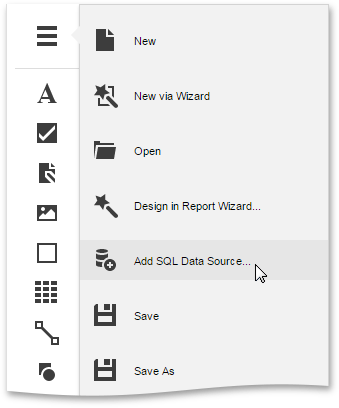

Bind a Report to Data
The Web Report Designer is primarily designed to work with data-aware reports, which means that a report obtains its general (dynamic) data from an external data source. This document describes how to bind a report to a data source.
The document consists of the following sections.
Use an Existing Data Source
Since the Web Report Designer allows you to work with the currently opened report, you can recreate this report and bind it to data, using an existing data source. To do this, run the Report Wizard.

The Report Wizard includes several steps, and depending on how many steps are completed (you don't necessarily have to go through all the pages), you can bind a report to data, apply data grouping, display totals, etc. The Report Wizard topic provides you with information about the steps of the wizard.
Create a New Data Source
You can also create a new data source and configure it, using the SQL Data Source Wizard.

Note that the SQL Data Source Wizard is only available if your software provider explicitly enabled this functionality by supplying the Web Report Designer with a set of default data connections.
For more information on how to use the SQL Data Source Wizard, see the SQL Data Source Wizard topic.
After binding a report to data, the Field List shows the structure of the report's data source. Fields from the Field List can be dropped onto the report to create data-aware controls of the appropriate type.

When a bound data source contains more than one data table, you can specify the data table from which your report obtains its data. To do this, specify the report's Data Member property.